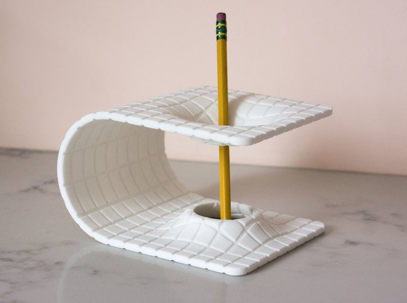
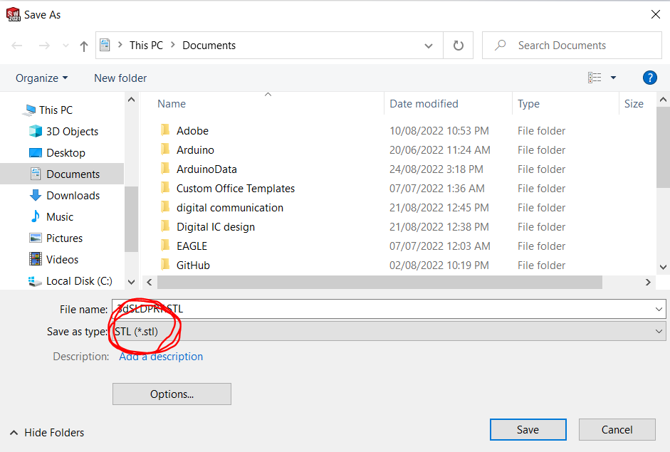
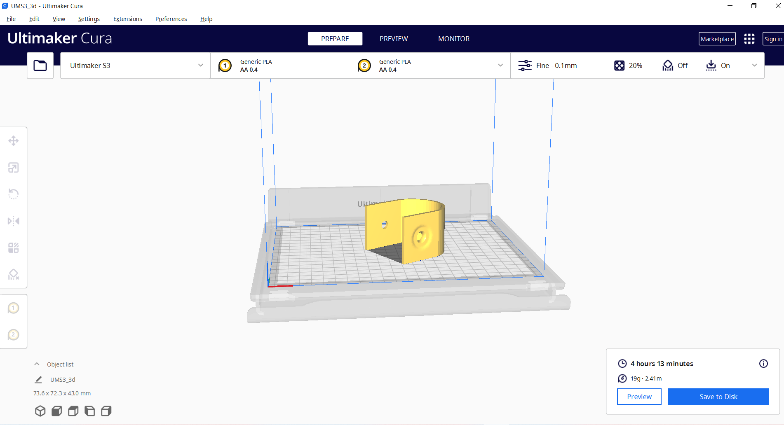

Step 1:Choosing design
I choosed the following pen holder, it's made by 3D printer and designed by solid works.
Step 2:Solid works design
First i sketched the outline of the holder then i extroded it, then i added plane above the surface i wanna make hole in it.
second, i sketched a circle on this plane then i added another plane beneath the surface
then i lofted the two circle on the surfce and plane2 and extroded cut on them, finally i filled the curvature between the circle on plane1 and surface.
finally the other face couldn't be mirrored so i opened a hole on it jut to prevent pens from flapping.

Step 3:Importing the file on cura
before importing the file, i saved it with extention STL, then i imported it on cura.
 Step 4:Importing file on 3d printer
i just copied the file on the flash to be printed on the machine.